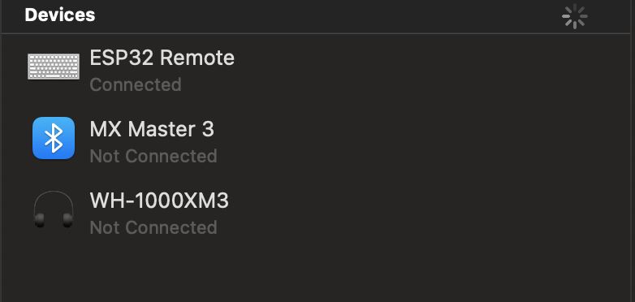
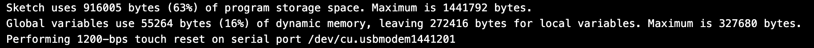

ESP32-S3 BLE Clicker
A simple BLE remote clicker using the Adafruit ESP32-S3.
09/09/2023
I really want to buy a Flipper Zero. If you are unaware, a Flipper Zero is a compact hacking tool that gives you access to an array of attacks at your fingertips - from Bad USB to NFC to Infrared, it can do a lot. The thing that really peaked my interest, however, was the additional ESP32 board you could purchase to extend the functionality of the device into the realm of wireless fidelity.
However, once I put the Flipper Zero and WiFi dev board into my basket and went to check out, the price compelled me to close the tab and reevaluate my needs. Instead, I decided to take the slightly more DIY approach to delving into the realm of ESP32 and the joy it can bring.
I picked up an ESP32-S3 device from Adafruits. It's a compact little thing with a built in 240x135 TFT display, 3 programmable buttons, a battery monitoring chip, NeoPixel LED, and a whole load more. This was appealing as an alternative to the Flipper Zero since it already had the display, inputs, and battery functionality built into the same board as the ESP32 chip.
One of the features of the ESP32-S3 chip is Bluetooth Low Energy (BLE). BLE differentiates itself from traditional bluetooth with its lower power use (shocking!) and lower data rate. This makes BLE the protocol of choice for IoT devices but also things like keyboards that don't transfer that much data at once and can benefit from the lower power use. To get my feet wet with this new device I decided to make a clicker using BLE - a device you can connect to your computer and use to advance your slide show while you give a great presentation.
It's a simple enough idea, and using the BleKeyboard library by T-vK makes the entire thing very trivial. I installed the library using the Arduino IDE and then wrote some very simple code to get it up and running.
#include
const int RIGHT_BTN = 0;
const int LEFT_BTN = 2;
BleKeyboard BLE("ESP32 Remote","chrisdinozzi",100);
void setup(){
BLE.begin();
}
void loop(){
if (digitalRead(RIGHT_BTN) == LOW){
BLE.write(KEY_RIGHT_ARROW);
while (digitalRead(RIGHT_BTN) == LOW){
delay(1);
}
}
if (digitalRead(LEFT_BTN) == HIGH){
BLE.write(KEY_LEFT_ARROW);
while (digitalRead(LEFT_BTN) == HIGH){
delay(1);
}
}
}
We start by declaring a new BleKeyboard object that I've called "BLE". The three parameters it takes are device name (what name it has when you connect to it), manufacturer, and battery percentage. Then, in the setup function we run "BLE.begin()" to start the communication. Once this function has been run, the BLE will start running and you will be able to connect to the device.

Next, we begin cycling through the "loop()" function. If the button D2 is pressed, it will go high and send a right arrow key press. We then go into a while loop that we will get stuck in as long as the button is held down. This is to prevent the same key being sent multiple times and advancing further than expected. We do exactly the same thing for the D0 button but it goes low rather than high and uses the left arrow key.
And that's it. You can compile and upload the coe to the board, connect the device, and click away to your hearts content.
I decided to spice it up a little more by making use of the display to help the user know which key did what and provide some feedback upon click.
#include
#include
const int RIGHT_BTN = 0;
const int LEFT_BTN = 2;
BleKeyboard BLE("ESP32 Remote","chrisdinozzi",100);
Adafruit_ST7789 tft = Adafruit_ST7789(TFT_CS, TFT_DC, TFT_RST);
void setup(){
// turn on backlite
pinMode(TFT_BACKLITE, OUTPUT);
digitalWrite(TFT_BACKLITE, HIGH);
// turn on the TFT / I2C power supply
pinMode(TFT_I2C_POWER, OUTPUT);
digitalWrite(TFT_I2C_POWER, HIGH);
// initialize TFT
tft.init(135, 240); // Init ST7789 240x135
tft.setRotation(3);
tft.setTextSize(2);
tft.fillScreen(ST77XX_BLACK);
tft.setCursor(0, 15);
tft.println("Right");
tft.setCursor(0, 105);
tft.println("Left");
BLE.begin();
}
void loop(){
if (digitalRead(RIGHT_BTN) == LOW){
BLE.write(KEY_RIGHT_ARROW);
tft.invertDisplay(false);
while (digitalRead(RIGHT_BTN) == LOW){
delay(1);
}
tft.invertDisplay(true);
}
if (digitalRead(LEFT_BTN) == HIGH){
BLE.write(KEY_LEFT_ARROW);
tft.invertDisplay(false);
while (digitalRead(LEFT_BTN) == HIGH){
delay(1);
}
tft.invertDisplay(true);
}
}
The big downside of this whole thing is the size of the BleKeyboard.h library. It's quite bulky. You can see it uses up about 60% of the devices storage.

A future project would be getting more into the weeds and writing my own code to interface with the ESP32 a little more directly, hopefully being able to reduce the size of the code as well.